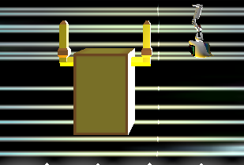
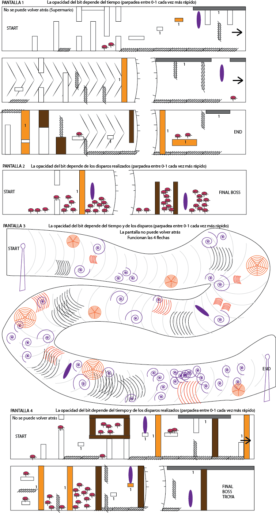
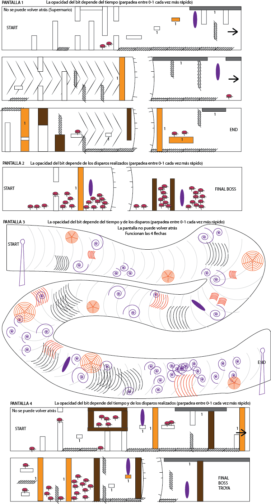

Bittrip
A 3D hardcore platformer (2.5D perspective) where a bipolar bit-based character has to get through WiFi waves, high-speed internet, faulty server wires and fight against evil viruses to deliver 1 bit of information
| Platform: PC | Duration: < 1 year | Team size: 5 |
| Tools used: Unity, 3Ds Max, Adobe Illustrator, Adobe Photoshop | ||
| Role: Game Designer, Level Designer, Tech Artist | ||
Overview
Bittrip is a single player, third-person platform adventure in 2.5D (3D with a 2D view) where a single bit called Bit (what a surprise!) has to travel through optical fiber, servers and wifi and deal with evil viruses to deliver safely 1 bit of information.
Bit can exist in two different modes - 1 and 0 - and each one of them activates or deactivates Bit's abilities and its environment. In the game we treat them like two different characters that the player switches: One and Zero.
Core game mechanics
Bit's bipolarity
Bit can exist in two different states. The player can always choose whether to exist in mode 0 or 1.
Mode 0 is the natural mode. Zero can move, jump and shoot enemies.

Mode 1 is the special mode. One can see blocks that Zero can't, and when in this mode, some environment features get activated (such as ceiling magnets, secret gates or superspeed). On the other hand, the shooting ability stays deactivated.


The levels were designed so that the player has to stay alert, think quicky, react and switch cleverly between both modes in order to overcome obstacles. In some situations certain combos are needed such as One -> Jump -> Zero -> Shoot -> One -> Jump.
Energy management
Zero is able to shoot tiny misiles using energy. The player has to carefully manage that energy in order to be able to have munition for all the enemy encounters.
In order to recover energy, levels have repeaters. On the other hand, Bit will have to avoid substractors that will remove energy from him.
Level Design
Levels were designed using the spectrum of environmental elements that emerged from the core mechanics such as breakable walls, through-walls, ceiling magnets, superspeed zones and Wi-Fi areas with floatability, among others.
 
